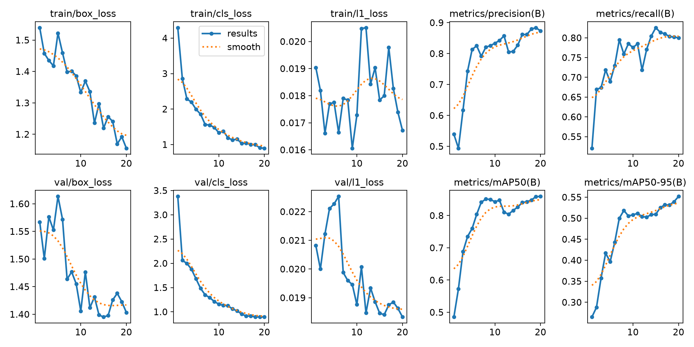
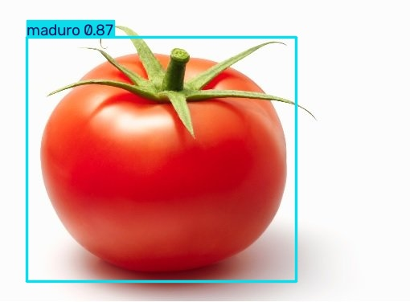
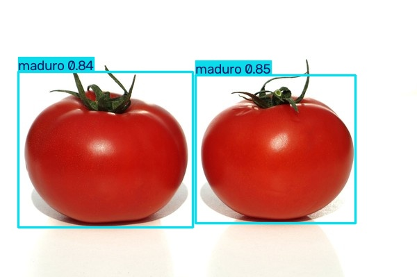
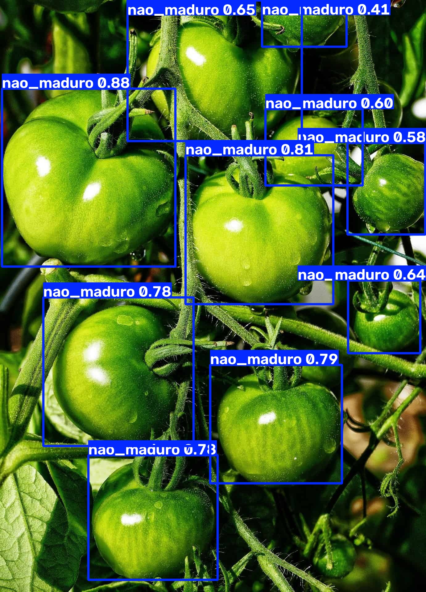
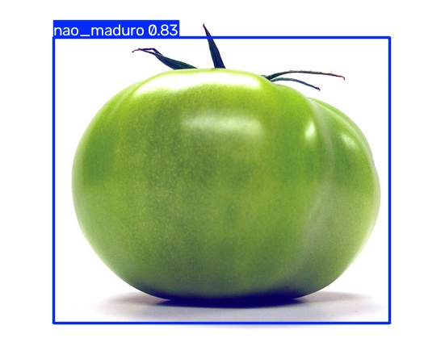
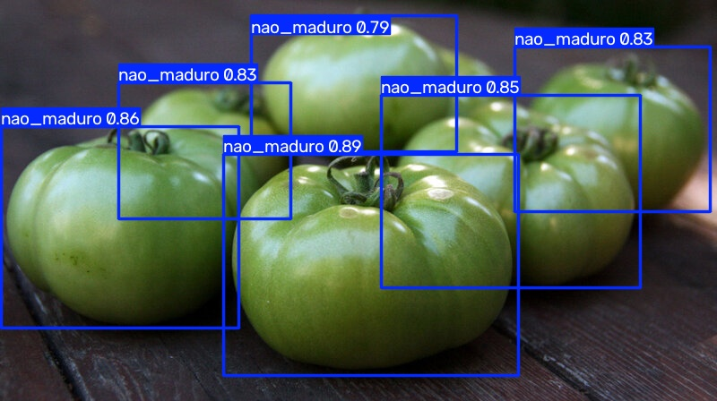

Correção após auditoria: foram encontradas fotos idênticas em divisões diferentes (ver ../docs/CONFERENCIA.md). As métricas abaixo registram a execução original com vazamento de dados e não comprovam generalização. Na final, todas as cinco imagens reservadas têm cópias no treino/validação e não atendem ao requisito de imagens inéditas. É necessário refazer a divisão, o treino e a avaliação.
Nome: Kauan Reis Bueno Turma: 8 Período Data: 17/11/2026
O projeto detecta tomates em dois estágios de maturação: não maduro e maduro. A tarefa foi escolhida como exemplo de visão computacional aplicada à agricultura; caixas delimitadoras informam também a posição dos frutos na imagem.
Dataset: Ripe and Unripe Tomatoes Dataset, de Suman Kunwar, Kaggle: https://www.kaggle.com/datasets/sumn2u/riped-and-unriped-tomato-dataset/versions/2. Foram pareadas 177 imagens JPEG e anotações de detecção YOLO; mapeamento: classe 0 nao_maduro (original unriped) e classe 1 maduro (original riped). Licença declarada: CC BY-SA 4.0. Uma caixa de altura zero foi removida apenas das cópias preparadas. Divisão: 137 treino, 35 validação e cinco imagens inéditas.
Foi utilizado YOLO26n com pesos pré-treinados, 20 épocas, imagem 640, lote 4 e CPU (workers=0). O melhor checkpoint está em modelo/best.pt.
Precision é a proporção das detecções emitidas que estão corretas. Recall é a proporção dos objetos reais que foram encontrados. mAP50 resume a precisão média por classe considerando como correspondência uma sobreposição IoU de pelo menos 0,50 entre caixa prevista e caixa anotada. Valores de validação no melhor checkpoint: mAP50-95 0,552, em 35 imagens e 210 instâncias.

A comparação entre as previsões e as anotações de referência foi feita nas cinco imagens reservadas por nome de arquivo. As previsões estão em runs/detect/resultados/imagens_ineditas/ e as referências em dataset/ready/unseen/labels_referencia/. A auditoria posterior encontrou cópias idênticas dessas imagens em treino/validação; por isso, essa reserva não constitui uma avaliação em imagens inéditas.
| Imagem inédita | TP / FP / FN | Observação |
|---|---|---|
| riped_tomato_29.jpeg | 1 / 0 / 0 | Classe maduro localizada |
| riped_tomato_47.jpeg | 2 / 0 / 0 | Duas caixas corretas |
| unriped_tomato_33.jpeg | 9 / 1 / 1 | Um falso positivo e uma omissão |
| unriped_tomato_41.jpeg | 1 / 0 / 0 | Classe nao_maduro localizada |
| unriped_tomato_70.jpeg | 6 / 0 / 0 | Seis caixas corretas |
TP/FP/FN foram contados comparando classe e IoU ≥ 0,50 com as anotações reservadas. No total das cinco imagens (20 objetos anotados), houve 19 TP, 1 FP e 1 FN. As previsões ilustradas foram salvas em runs/detect/resultados/imagens_ineditas/; a tabela completa está em evidencias/comparacao_ineditas.csv.





Uma anotação de origem tinha altura zero e foi removida somente das cópias preparadas. O conjunto é pequeno e tem variedade limitada; nas cinco imagens inéditas houve um falso positivo e uma omissão. Mais imagens diversas, revisão de rótulos e caixas e validação em diferentes cenários ajudariam a medir e aumentar a generalização. Cinco imagens são uma demonstração didática, não prova de robustez operacional.
nao_maduro e maduro; arquivos JPEG e rótulos de caixas YOLO.imgsz=640, batch=4, CPU (workers=0).unriped_tomato_33.jpeg houve um falso positivo e uma omissão. No conjunto de cinco, 19 TP, 1 FP e 1 FN comparando classe e IoU ≥0,50.Os arquivos que acompanham este relatório estão organizados na pasta da atividade:
dataset/ready/, com o arquivo data.yaml. A origem e a licença do dataset estão descritas na seção 2.modelo/best.pt.prepare_dataset.py e compare_unseen.py, além de comandos.txt.evidencias/; gráficos em runs/detect/resultados/treino_final/.runs/detect/resultados/imagens_ineditas/.As métricas e predições apresentadas correspondem aos artefatos salvos nessa execução.